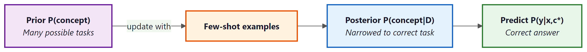

Show a model three examples and it figures out the pattern. Show it zero examples and it still tries, with alarming confidence. Nobody trained it to do this; it just started happening one day, and theorists have been catching up ever since.
Scale, Zero-Shot Confident AI Agent
Prerequisites
This section assumes understanding of the attention mechanism from Section 4.1 and the concept of in-context learning introduced in Section 6.1 (GPT-3 discussion). Some familiarity with Bayesian inference is helpful but not required; key concepts are explained as needed.
In-context learning (ICL) is one of the most surprising capabilities of large language models. When you provide a few examples in a prompt, the model adapts its behavior to the demonstrated pattern without any gradient updates to its parameters. This section explores the theoretical frameworks that attempt to explain this phenomenon: the Bayesian inference interpretation, the implicit cross-entropy hypothesis, the role of task vectors in internal representations, and the mesa-optimization perspective. Understanding these theories is essential for designing effective few-shot prompts and for reasoning about the capabilities and limitations of in-context learning. The attention mechanism from Section 3.3 is central to several of these explanations.
6.7.1 The Mystery of In-Context Learning
Consider a standard few-shot prompting scenario. You provide a large language model with several input-output pairs followed by a new input:
# Few-shot classification example
prompt = """
Review: "This movie was absolutely wonderful!"
Sentiment: Positive
Review: "Terrible acting and a boring plot."
Sentiment: Negative
Review: "The cinematography was stunning but the story fell flat."
Sentiment: Mixed
Review: "I laughed and cried, a true masterpiece."
Sentiment:"""# Conceptual demonstration of task vector extraction
import torch
def extract_task_vector(model, tokenizer, few_shot_prompt, zero_shot_prompt):
"""
Extract the task vector by comparing activations of
few-shot vs zero-shot prompts at a specific layer.
"""
activations = {}
def hook_fn(name):
def hook(module, input, output):
activations[name] = output[0][:, -1, :] # last token
return hook
# Register hook at a middle layer
target_layer = model.layers[len(model.layers) // 2]
handle = target_layer.register_forward_hook(hook_fn("mid"))
# Get activations for few-shot prompt
tokens_fs = tokenizer(few_shot_prompt, return_tensors="pt")
with torch.no_grad():
model(**tokens_fs)
act_few_shot = activations["mid"].clone()
# Get activations for zero-shot prompt
tokens_zs = tokenizer(zero_shot_prompt, return_tensors="pt")
with torch.no_grad():
model(**tokens_zs)
act_zero_shot = activations["mid"].clone()
handle.remove()
# Task vector = difference in activations
task_vector = act_few_shot - act_zero_shot
return task_vector
# The task vector can then be added to zero-shot activations
# to induce few-shot behavior without the demonstrations
The model outputs "Positive" without any fine-tuning. Its weights are frozen. Yet it has somehow "learned" the sentiment classification task from just three examples. How?
This is not simply pattern matching or memorization. GPT-3 demonstrated that models can perform ICL on novel tasks that could not have appeared in the training data, such as classifying inputs using randomly assigned labels. The model is not recalling a memorized mapping; it is constructing a task-specific computation from the prompt.
Who: A data scientist at a consumer electronics company tasked with classifying customer feedback into new, previously undefined categories.
Situation: After a major product launch, the team needed to categorize thousands of support tickets into categories that did not exist in their existing taxonomy (e.g., "battery swelling concern," "wireless charging interference," "MagSafe alignment issue").
Problem: Fine-tuning a classifier required labeled training data they did not yet have. Manually labeling enough examples for supervised learning would take weeks.
Dilemma: Wait weeks for labeled data and a fine-tuned model, or use a rapid approach that might sacrifice accuracy. Zero-shot prompting produced inconsistent results because the categories were domain-specific and unfamiliar to the base model.
Decision: They used 5-shot in-context learning with GPT-4, providing five hand-labeled examples per category directly in the prompt.
How: The team manually labeled 40 examples (5 per category for 8 categories), constructed a few-shot prompt template, and processed all 12,000 tickets through the API. They validated against a random sample of 200 tickets checked by human reviewers.
Result: The few-shot approach achieved 87% accuracy on the human-validated sample, operational within 2 hours of the categories being defined. A fine-tuned classifier built two weeks later achieved 93% accuracy. The few-shot system handled the critical first two weeks while labeled data accumulated.
Lesson: In-context learning is a powerful rapid-prototyping tool: it lets you deploy a working classifier in hours, buying time to collect the labeled data needed for a fine-tuned production model.
In-context learning clearly works in practice, but how? What is happening inside the model when it reads a few examples and suddenly "learns" a new task? Several theoretical frameworks attempt to explain this phenomenon, and they point to a surprisingly elegant mechanism.
6.7.2 The Bayesian Inference Interpretation
Nobody explicitly programmed in-context learning into LLMs. It emerged as a side effect of next-token prediction at scale. Researchers are still debating exactly how it works, which makes it one of the few features in software engineering that shipped before anyone understood why it existed.
Xie et al. (2022) proposed that in-context learning can be understood as implicit Bayesian inference over a latent concept variable. The idea is that pre-training on diverse documents effectively teaches the model a prior distribution over "tasks" or "concepts." When few-shot examples are provided in the prompt, the model performs approximate Bayesian updating to identify which concept generated those examples, and then uses that posterior to predict the answer for the query.
More formally, the model implicitly computes:
where $D = {(x_{1},y_{1}), ..., (x_{k},y_{k})}$ is the set of demonstrations, $c$ is the latent concept, and $(x_{q}, y_{q})$ is the query. The demonstrations narrow the posterior $P(c | D)$ to the correct concept, enabling accurate prediction.
This framework explains several observed properties of ICL: more examples improve performance (they narrow the posterior), the order of examples matters (the model processes them sequentially), and ICL works best for tasks similar to those encountered during pre-training (they must be within the model's prior).

6.7.3 In-Context Learning as Implicit Gradient Descent
A more mechanistic explanation, proposed independently by Akyurek et al. (2023) and Von Oswald et al. (2023), is that transformer attention layers implement something functionally equivalent to gradient descent. When the model processes few-shot examples, the attention mechanism computes updates to an internal "hypothesis" that are analogous to gradient steps on a loss function defined by the demonstrations.
The key insight comes from analyzing the structure of a single attention head. Consider a linear attention head (attention without softmax) operating on a sequence that contains input-output pairs. The attention output at the query position can be decomposed as:
where $X$ is the matrix of in-context inputs and $Y$ is the matrix of in-context outputs (used as the values). This has the same mathematical form as one step of gradient descent on a linear regression problem (von Oswald et al., 2023, arXiv:2212.07677; see also Schlag et al., 2021, arXiv:2102.11174 for the equivalence to fast-weight programmers). The "training data" is the set of in-context examples encoded in the key-value pairs, the "query" is the test input, and the attention mechanism computes a prediction by comparing the query against the examples.
# Linear attention as one gradient descent step: show that a single
# linear attention layer implicitly performs regression on in-context examples.
import torch
import torch.nn as nn
class LinearAttentionAsGD(nn.Module):
"""
Demonstrates how linear attention on in-context examples
implements one step of gradient descent on a regression task.
"""
def __init__(self, d_in, d_out):
super().__init__()
self.W_K = nn.Parameter(torch.randn(d_in, d_in) * 0.1)
self.W_Q = nn.Parameter(torch.randn(d_in, d_in) * 0.1)
self.W_V = nn.Parameter(torch.randn(d_out, d_in) * 0.1)
def forward(self, X_ctx, y_ctx, x_query):
"""
X_ctx: (n_examples, d_in) - in-context inputs
y_ctx: (n_examples, d_out) - in-context outputs
x_query: (d_in,) - query input
"""
# Key-Query similarity (like GD step direction)
keys = X_ctx @ self.W_K.T # (n, d_in)
query = self.W_Q @ x_query # (d_in,)
attn = keys @ query # (n,) linear attention
# Value-weighted output (like GD update)
values = y_ctx # (n, d_out)
output = attn @ values # (d_out,)
return output
# Compare with explicit gradient descent
def one_step_gd(X_ctx, y_ctx, x_query, lr=0.01):
"""One step of GD on linear regression, starting from w=0."""
# Gradient of MSE at w=0: -2/n * X^T @ y
w = lr * X_ctx.T @ y_ctx / len(X_ctx)
return x_query @ w
# Example with toy data
torch.manual_seed(42)
X = torch.randn(5, 3) # 5 examples, 3 features
w_true = torch.tensor([1.0, -0.5, 0.3])
y = X @ w_true + torch.randn(5) * 0.1 # noisy labels
x_q = torch.randn(3)
gd_pred = one_step_gd(X, y, x_q)
true_val = x_q @ w_true
print(f"True value: {true_val.item():.4f}")
print(f"GD prediction: {gd_pred.item():.4f}")
print(f"(Attention-based ICL implements a similar computation)")
Multi-layer transformers implement multi-step gradient descent. While a single attention layer corresponds to one gradient step, stacking multiple layers allows the transformer to implement iterative refinement. Each layer takes the current "hypothesis" and refines it using the in-context examples, analogous to multiple steps of an optimization algorithm. Deeper transformers can solve more complex in-context tasks because they effectively run more optimization iterations.
6.7.4 Task Vectors
Todd et al. (2024) and Hendel et al. (2023) identified a concrete mechanism by which transformers implement ICL: task vectors. When a transformer processes few-shot demonstrations, it constructs a vector in its activation space that encodes the task being demonstrated. This task vector can be extracted and transplanted into other forward passes to induce the same behavior without the original demonstrations.
The experimental evidence is compelling. Researchers found that:
- Computing the difference between the model's activations with and without demonstrations yields a task vector.
- Adding this task vector to the activations of a zero-shot prompt produces few-shot quality performance.
- Task vectors from different sets of demonstrations for the same task are similar, while vectors for different tasks point in different directions.
- The task vector primarily resides in the residual stream at specific layer positions, suggesting that ICL is localized to particular components of the network. Chapter 11 explores related techniques for understanding what transformer components learn and how they process information.
Note: This code example is conceptual and requires downloading a language model (e.g., GPT-2) to run. The purpose is to illustrate the task vector extraction logic, not to provide a standalone runnable script. A full working version would need approximately 500 MB of model weights.
# Task vector extraction: the DIFFERENCE between a fine-tuned model and its base
# is itself a "task vector" you can add, subtract, or scale.
# Ilharco et al., "Editing Models with Task Arithmetic" (ICLR 2023).
import torch
from transformers import AutoModelForCausalLM
base_id = "meta-llama/Llama-3-8B"
ft_id = "meta-llama/Llama-3-8B-Instruct"
base = AutoModelForCausalLM.from_pretrained(base_id, torch_dtype=torch.float16)
ft = AutoModelForCausalLM.from_pretrained(ft_id, torch_dtype=torch.float16)
# task_vector = theta_ft - theta_base (one tensor per parameter)
task_vector = {n: ft.state_dict()[n] - base.state_dict()[n] for n in base.state_dict()}
# Apply at any scale alpha; alpha=1 reproduces ft, alpha=0 reproduces base,
# negative alpha "subtracts" the fine-tune behavior.
def apply_task_vector(model, task_vector, alpha: float):
sd = model.state_dict()
for name, delta in task_vector.items():
sd[name] = sd[name] + alpha * delta
model.load_state_dict(sd)
# Half the instruction-tuning strength
apply_task_vector(base, task_vector, alpha=0.5)
# Composing multiple task vectors gives multi-task models without extra training.6.7.5 Mesa-Optimization
A more speculative but intellectually provocative perspective comes from the mesa-optimization framework (Hubinger et al., 2019). The hypothesis is that sufficiently large transformers do not merely implement fixed input-output mappings but actually learn to run internal optimization algorithms. The pre-training process (the "base optimizer") creates a model that itself contains an optimizer (the "mesa-optimizer") that runs at inference time.
Under this view, when a transformer performs in-context learning, it is literally running an optimization algorithm inside its forward pass: the few-shot examples define an objective, and the stacked attention layers iteratively optimize an internal representation to minimize that objective. The model is not just pattern matching; it is optimizing.
Evidence for this perspective includes the gradient descent equivalence discussed above, the observation that ICL performance improves with model depth (more optimization steps), and the finding that transformers can learn to implement various learning algorithms (ridge regression, logistic regression, decision trees) from in-context examples alone.
The mesa-optimization perspective remains an active area of debate. It is unclear whether the internal computations of real LLMs are truly optimizing a coherent objective or merely performing pattern matching that resembles optimization in controlled settings. The theoretical frameworks provide useful intuitions but have not been conclusively validated on production-scale models.
6.7.6 Practical Implications: Why Prompt Design Matters
These theoretical frameworks have direct implications for prompt engineering:
- Example selection: The Bayesian interpretation explains why choosing examples that are representative of the task distribution improves performance. They provide stronger evidence for the correct concept. See Section 14.1 for practical guidance on selecting and formatting few-shot examples.
- Example ordering: Because the transformer processes tokens sequentially and the implicit gradient descent operates iteratively, the order of examples affects the final "hypothesis." Placing the most informative or typical examples last (closest to the query) often helps.
- Number of examples: More examples narrow the posterior and provide additional gradient steps, but there are diminishing returns. The task vector perspective suggests that the task representation converges after a modest number of examples.
- Label consistency: Conflicting or noisy labels in the demonstrations confuse the Bayesian update and push the gradient descent in contradictory directions, degrading performance.
In-context learning reveals a striking duality in how neural networks acquire capabilities. Traditional machine learning updates parameters (weights) through gradient descent over many examples. ICL achieves something functionally equivalent by updating activations (hidden states) through a single forward pass. This mirrors a distinction in biology between evolutionary adaptation (slow, across generations, encoded in DNA) and neural plasticity (fast, within a lifetime, encoded in synaptic connections). Pre-training is the evolutionary process that builds the general architecture; in-context learning is the real-time adaptation that specializes it for a task. The mesa-optimization perspective pushes this analogy further: if transformers truly learn to optimize internally, they have crossed a threshold from being tools that are optimized to being systems that optimize, a qualitative shift that connects to fundamental questions in philosophy of mind about the nature of agency and goal-directed behavior.
6.7.7 Limitations of In-Context Learning
Despite its power, ICL has systematic limitations:
- Distribution shift: ICL struggles when the test query is far from the distribution of the demonstrations. The implicit optimization is local and cannot extrapolate far from the examples.
- Complex reasoning: Tasks requiring multi-step logical reasoning, precise arithmetic, or compositional generalization often exceed what ICL can achieve, even with many examples.
- Context length: The number of demonstrations is bounded by the model's context window. Long demonstrations also increase computational cost quadratically with attention.
- Sensitivity to formatting: Small changes in prompt formatting (punctuation, spacing, label tokens) can significantly affect ICL performance, suggesting that the mechanism is fragile and dependent on surface-level pattern matching in addition to deeper task inference.
6.7.8 Connection to Few-Shot Prompting Practice
Understanding ICL theory improves practical few-shot prompting. The table below connects theoretical insights to actionable strategies.
| Theory | Implication | Practical Strategy |
|---|---|---|
| Bayesian inference | Examples narrow the task posterior | Choose diverse, representative examples |
| Implicit GD | More layers = more optimization steps | Use larger models for harder ICL tasks |
| Task vectors | Task representation converges quickly | 3-5 examples often suffice |
| Mesa-optimization | Model implements a learning algorithm | Format examples like "training data" |
Exercises
"In-context learning" is a misnomer in one important sense. (a) What weights are updated during in-context learning? (b) If the model isn't really learning, why does showing examples in the prompt help so much? (c) What does this imply for tasks where the desired behavior was never seen in any form during pretraining?
Answer Sketch
(a) None: every weight is frozen at inference time. The "learning" happens entirely in the forward pass through context activations, not in any weight update. (b) The examples function as a task identifier and an output-format anchor: they let the model retrieve the right behavior from its pretraining-acquired skill library, conditioning the next-token distribution on the inferred task identity. (c) On truly novel tasks (no analogue in pretraining), in-context examples buy you very little; you typically need fine-tuning or external tools. This is why ICL works astonishingly well for "translate", "summarize", "extract", and surprisingly poorly for, say, novel mathematical reasoning over symbolic schemas the model has never seen.
You measure GSM8K accuracy on a frontier model with 0, 1, 2, 4, 8, 16 in-context examples. Predict the qualitative shape of the curve: (a) Where do you expect the largest jump? (b) Where do diminishing returns set in? (c) What single intervention would shift the entire curve up more than adding more examples ever could?
Answer Sketch
(a) The biggest jump is from 0 -> 1: the single example provides the format anchor (chain-of-thought style with "Let's think step by step", or a worked answer pattern) and is worth far more than any subsequent example. (b) Diminishing returns kick in by 4-8 examples; on most reasoning tasks 16 examples is statistically indistinguishable from 8. (c) Switching from few-shot to chain-of-thought prompting shifts the curve up by ~10-30 points on math and logical reasoning, dwarfing the few-shot effect. Even a single chain-of-thought example beats 16 plain examples. This is why 2026 production prompts almost universally include CoT scaffolding rather than relying on raw few-shot.
The "task vector" hypothesis says that ICL produces an internal vector at one layer that encodes the task identity. Sketch a 6-line probe to test it: feed a model a few-shot prompt for sentiment analysis, capture the residual stream at layer L on the last few-shot example, then inject that captured vector into a zero-shot prompt at the same layer and check if accuracy rises. What is the expected outcome?
Answer Sketch
vec = model.run_capture(few_shot_prompt, layer=L)[-1] # residual at last token
def hook(module, inp, out): out[0][:, -1, :] += vec; return out
model.layers[L].register_forward_hook(hook)
acc_zero_shot_with_vec = eval(model, zero_shot_prompts)Expected: accuracy on the zero-shot prompts rises substantially (often within 5-10% of the few-shot baseline), confirming that much of ICL's effect can be compressed into a single vector at one layer. The Hendel et al. (2023) "task vectors" paper formalized this; it gives empirical weight to the "ICL is Bayesian task identification" interpretation.
List four ways in-context learning can fail in production, beyond simple "wrong answer". For each, give one prompting or systems mitigation.
Answer Sketch
(1) Format leakage: model copies the exact wording of an example label rather than reasoning. Mitigation: vary the examples' surface forms. (2) Recency bias: predictions skew toward the answer in the most recent example. Mitigation: shuffle example order, or use more examples to dilute the bias. (3) Distractor sensitivity: an irrelevant example or a near-duplicate example dramatically changes the answer. Mitigation: dynamic example selection by similarity to the query. (4) Length-induced degradation: adding too many examples pushes important context out of the model's effective attention range. Mitigation: cap shots, or use a smaller relevant subset retrieved at query time. These four failure modes are why "more examples is always better" is wrong in practice.
Despite its power, in-context learning fails in systematic and poorly understood ways. ICL can be sensitive to the order of examples (permuting few-shot examples sometimes changes the answer), to the label space (models can be biased toward labels seen more recently), and to the format of examples (small formatting changes can cause large performance swings). Understanding when ICL will fail and why remains an open research question. Practical advice: always test ICL setups with multiple example orderings and formats, and consider fine-tuning when reliability is critical.
Show Answer
Show Answer
Show Answer
Show Answer
Key Takeaways
- In-context learning enables transformers to adapt to new tasks from examples in the prompt without any weight updates.
- The Bayesian interpretation frames ICL as implicit inference over a latent concept variable, with demonstrations narrowing the posterior to the correct task.
- The implicit gradient descent view shows that attention layers can implement optimization steps, with multi-layer transformers performing iterative refinement.
- Task vectors provide concrete evidence that transformers encode tasks as directions in activation space, which can be extracted and transplanted.
- The mesa-optimization perspective suggests that large transformers may learn to run internal optimization algorithms during their forward pass.
- These theories have practical implications for prompt design: choose representative examples, order them thoughtfully, and use consistent formatting.
- ICL has systematic limitations with distribution shift, complex reasoning, and sensitivity to formatting that practitioners should be aware of.
Mechanistic understanding of ICL. Recent work by Todd et al. (2024) has identified "function vectors" that encode specific input-output mappings in model activations, extending the task vector framework to fine-grained function identification. Meanwhile, the Many-Shot ICL paradigm (Agarwal et al., 2024) shows that with sufficiently long context windows (hundreds of examples), ICL performance approaches fine-tuning quality on many benchmarks, blurring the boundary between in-context adaptation and gradient-based learning. The connection between ICL and interpretability (Section 11.1) continues to deepen, with induction head analysis now used as a diagnostic tool for model quality.
What's Next?
In the next chapter, Section 6.8: Production LLM Training Systems: Megatron, Elastic Training, and Fault Tolerance, we survey the modern LLM landscape, comparing both closed-source and open-weight models across capabilities and architectures.